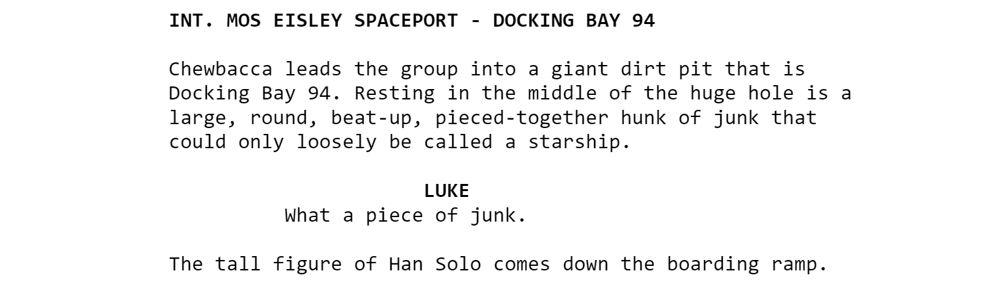

-------------------- type List<'T> = | ( [] ) | ( :: ) of Head: 'T * Tail: 'T list interface IEnumerable interface IEnumerable<'T> member GetSlice : startIndex:int option * endIndex:int option -> 'T list member Head : 'T member IsEmpty : bool member Item : index:int -> 'T with get member Length : int member Tail : 'T list static member Cons : head:'T * tail:'T list -> 'T list static member Empty : 'T list
Full name: Microsoft.FSharp.Collections.List<_>
val map : mapping:('T -> 'U) -> list:'T list -> 'U list
Full name: Microsoft.FSharp.Collections.List.map
val x : obj
val parseScenes : sceneAcc:'a list -> characterAcc:'b -> items:string list -> 'a list
Full name: Microsoft.FSharp.Collections.Array.mapi
val i : int
val c : float
Warning
Contains some spoilers for episodes I - VII
the star wars
social network

Parsing scripts
1: 2: 3: 4: 5: 6: 7: 8: 9: 10: 11:
<b> INT. MOS EISLEY SPACEPORT - DOCKING BAY 94 </b>
Chewbacca leads the group into a giant dirt pit that is
Docking Bay 94. Resting in the middle of the huge hole is a
large, round, beat-up, pieced-together hunk of junk that
could only loosely be called a starship.
<b> LUKE </b>
What a piece of junk.
The tall figure of Han Solo comes down the boarding ramp.
letrecparseScenessceneAcccharacterAcc (items:stringlist) =matchitemswith
| item::rest->matchitemwith
| SceneTitletitle->// add the finished scene to the scene accumulatorletfullScene=List.revcharacterAccparseScenes (fullScene::sceneAcc) [] rest
| Namename->// add character's name to the character accumulatorparseScenessceneAcc (name::characterAcc) rest
| Word->// do nothingparseScenessceneAcccharacterAccrest
| [] ->List.revsceneAcc
Parsing with active patterns
1: 2: 3: 4: 5: 6: 7: 8:
let (|SceneTitle|Name|Word|) (text:string) =letscenePattern="[ 0-9]*(INT.|EXT.)[ A-Z0-9]"letnamePattern="^[/A-Z0-9]+[-]*[/A-Z0-9 ]*[-]*[/A-Z0-9 ]+$"ifRegex.Match(text, scenePattern).SuccessthenSceneTitletextelifRegex.Match(text, namePattern).SuccessthenNametextelseWord
\[\text{Degree}(v) = \text{Number of links }v \leftrightarrow v' \\
v \neq v'\]
Betweenness
Betweenness
Betweenness
Betweenness
Betweenness
Betweenness
\[S_v = \text{Number of shortest paths between $a$ and $b$ through $v$} \\
S = \text{Number of shortest paths between $a$ and $b$} \\ \\
\text{Betweenness}(v)_{ab} = \frac{S_v}{S}\]
Betweenness
\[S_v = \text{Number of shortest paths between $a$ and $b$ through $v$} \\
S = \text{Number of shortest paths between $a$ and $b$} \\ \\
\text{Betweenness}(v) = \sum_{ab} \frac{S_v}{S}\]